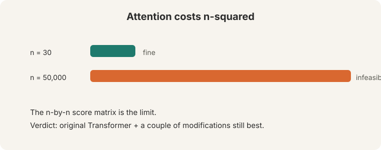
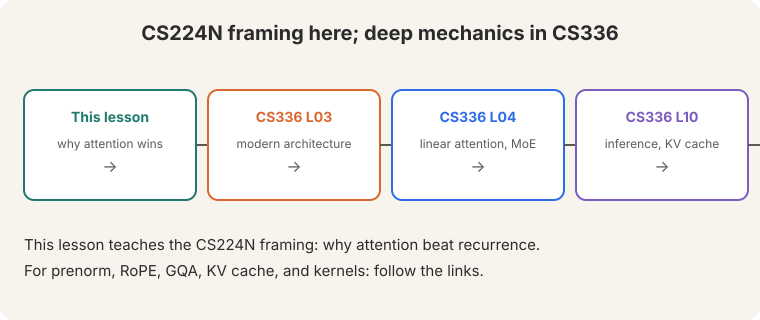

Lecture 8: Transformers (Bridge)
Video blocked (ad-blocker or local file mode).
Watch on YouTubeVideo not loading? Watch on YouTube
Guest lecture. Anna Goldie derives the transformer from the failures of recurrence.
Bridge lesson. This lecture teaches the CS224N framing: why attention beat recurrence and what the transformer block contains. For deep mechanics, follow the links: CS336 L03 (the modern architecture: prenorm, RoPE, GQA), CS336 L04 (linear attention and MoE), CS336 L10 (inference and the KV cache). This lesson never re-explains what those cover.
How to read this lesson
This lesson has two levels. Level 1 (Core) derives the transformer from the two failures of RNNs. Level 2 (Deep) covers multi-head attention, scaling, residuals, normalization, and the full block.
Level 1: Two problems attention solves
RNNs fail twice (04:40 ⏱04:40):

- Linear interaction distance. “The chef who went to the stores … was.” Subject and verb sit far apart. RNN memory fades across the gap.
- O(n) sequential steps. Each step waits for the last. GPUs cannot parallelize.
Attention connects every pair of positions directly: constant interaction distance, fully parallel.
Level 1: Attention as fuzzy key-value lookup
Think of attention as a fuzzy key-value lookup (12:03 ⏱12:03). The query says what you need. Keys say what each position offers. Values are what you get back.

Separate Q and K is a design choice with a reason: it is a low-rank approximation of a bilinear form. Fewer parameters, same comparison power. Efficiency first.
Level 1: Self-attention is a set operation
Self-attention applies attention within one sequence: every word queries every word. It is a SET operation. “Zuko made his uncle” and “his uncle made Zuko” contain the same words (14:48 ⏱14:48, 22:01 ⏱22:01). Without order information, self-attention cannot tell them apart.

Hence positional encoding: inject order back in. Two options:
- Sinusoidal. Fixed waves per position. Elegant. Extrapolation “doesn’t work in practice.”
- Learned. A d-by-n embedding matrix. Works, but crashes beyond the trained length n. It works because the position index correlates across examples.
Level 1: Masking hides the future
Training must not reveal the answer. The model sees the full n-by-n score matrix. For future positions, set scores to minus infinity. Softmax turns them to zero (37:18 ⏱37:18).

The decoder masks. The encoder does not: it may see the whole sentence. Padding is masked like the future.
The model reads the answer during training. “It is just too easy”: loss falls to zero, and the model learns nothing about prediction. Every generated token would cheat. Encoders do not predict the next token. They build representations of a complete input (translation source, classification text). No prediction means no cheating.
Level 2: Scaled dot-product and multi-head attention
Raw dot products grow with dimension. Large dots flatten the softmax gradient. Fix: divide by sqrt(d_k). Scaled dot-product attention.
Multi-head attention runs several attentions in parallel: 8 heads, each on d/H dimensions (42:31 ⏱42:31). Heuristic: at least 64 dimensions per head. Heads “hopefully specialize” in different relations. Not guaranteed. You can zero out some heads after training with little loss.
In matrix form: XQ times XK-transpose gives the n-by-n score matrix. Softmax rows. Multiply by XV.
Level 2: Residuals and normalization
Residual connections add the input back: gradient 1 flows through the identity path. Deep stacks stay trainable.
LayerNorm normalizes per word, not across the sequence or batch (61:01 ⏱61:01): subtract the mean mu, divide by sqrt(sigma) (63:22 ⏱63:22), then scale by gamma and shift by beta (63:36 ⏱63:36). Gamma and beta “maybe isn’t actually that important.”
The block: self-attention, add and norm, feedforward, add and norm. Repeat. Cross-attention (encoder-decoder): queries come from the decoder, keys and values from the encoder.

The lecturer’s “personal opinion” of the minimal thing: embed + position + self-attention + MLP + masking, repeated.
Level 2: Results and limits

Level 2: Results and limits
Attention delivered: faster MT training, document generation, and the pretraining revolution. The quadratic cost is the limit: n=30 is fine, n=50000 is infeasible (28:07 ⏱28:07). The verdict: “the original Transformer plus a couple of modifications is still the best.”
For the modifications: CS336 L03 covers prenorm, RoPE, GQA, and SwiGLU. CS336 L04 covers sub-quadratic attention. CS336 L10 covers the KV cache that makes decoding affordable.
Two wins at once. Constant interaction distance: every word reaches every other word directly, so long dependencies survive. Full parallelization: all positions compute at once, so GPUs stay busy. The LSTM had neither. Order and efficiency. Self-attention is a set operation, so position must be injected artificially. And the n-by-n score matrix costs quadratic time and memory, which caps context length.
Recap: the whole lesson on one screen
Eight ideas carry this lecture. Read each card. Say the core sentence out loud. If you can, you own the lesson.
Linear interaction distance ("the chef ... was") and O(n) sequential steps. Attention connects every pair directly, all in parallel.
Key: constant distance, full parallelism
Query: what I need. Keys: what I offer. Values: what I return. Separate Q/K is a low-rank bilinear approximation: efficiency first.
Key: 12:03 ⏱12:03
"Zuko made his uncle" versus "his uncle made Zuko": same set, same output. Positional encoding injects order back in.
Key: order must be injected
Minus infinity for future positions; softmax turns them to zero. Otherwise training is "just too easy". Encoders do not mask.
Key: no peeking
Embed + position + masked self-attention + MLP. Residuals and per-word LayerNorm around each part. Repeat.
Key: the whole architecture
Heads hopefully specialize; not guaranteed. Divide dots by sqrt(d_k). Zero out useless heads after training.
Key: divide by sqrt(d_k)
Queries from the decoder, keys and values from the encoder. Residuals carry gradient 1 through the identity.
Key: Q from decoder, K/V from encoder

This lesson: the framing. CS336 L03: prenorm, RoPE, GQA. L04: linear attention. L10: KV cache. Never re-explained here.
Key: bridge, not duplicate
Official sources and further reading
Official: - Lecture 8 video and transcript. - Vaswani et al. (2017): the transformer paper.
Further reading: - CS336 L03: the modern transformer architecture, the direct continuation. - CS336 L10: KV cache and inference. - The Annotated Transformer (Harvard NLP): line-by-line implementation.
Caveats from these sources. “Extrapolation doesn’t work in practice” is the lecturer’s verdict on sinusoidal encodings, not a theorem. “Original Transformer plus a couple modifications is still the best” is a 2024 opinion. Later work (L04 of CS336) challenges parts of it.
Connections to the other courses
- This course: L05-L07 built the RNN-to-attention arc. L09 uses the transformer for pretraining. L12 trains it efficiently.
- CS336: L03 (architecture), L04 (linear attention, MoE), L10 (inference) carry the deep mechanics.
- CS229S: the low-rank Q/K approximation is matrix factorization in disguise.
Transformers cheatsheet. Fixes: linear interaction distance, O(n) sequential. Attention: fuzzy key-value lookup. Separate Q/K = low-rank bilinear. Self-attention: set op. Needs position. Position: sinusoidal (no extrapolation) vs learned d-by-n (crashes past n). Mask: -inf future, softmax 0. Decoder masks, encoder does not. Scale: divide by sqrt(d_k). Heads: 8, d/H each, 64+ dims. Residual: gradient 1. LayerNorm: per word, mu/sigma, gamma/beta optional-ish. Block: attn -> add&norm -> FFN -> add&norm. Cross-attn: Q decoder, K/V encoder. Cost: quadratic. N=30 fine, n=50000 not.
Sets need order. Futures need masks. Self-attention ignores order, so inject position. Training must not see answers, so mask the future. Two fixes, one architecture.
Sources
- VIDEOLecture 8 video, Stanford Online YouTube
- NOTESOfficial subtitle transcript
- PAPERVaswani et al., Attention Is All You Need (2017)